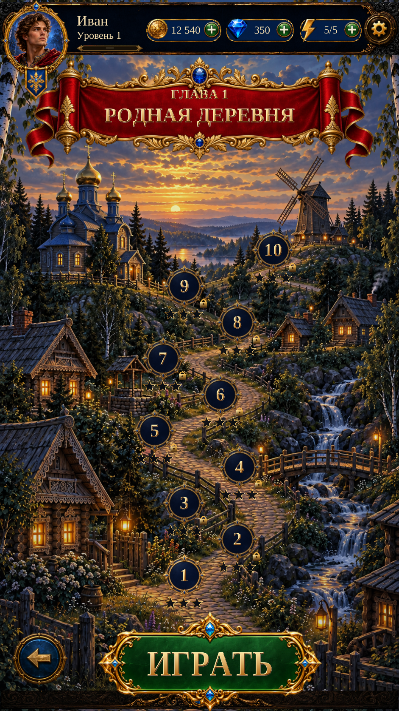

Chapter Map — reference assessmentChapter Map · Reference assessment
The level flow works, but the header, banner, markers, scenery and bottom controls still differ from the original.
Fresh native captures. 3/3 Play Mode checks passed; 2/3 Edit Mode checks passed. The failing check confirms the old header asset. No implementation changes in this assessment.
